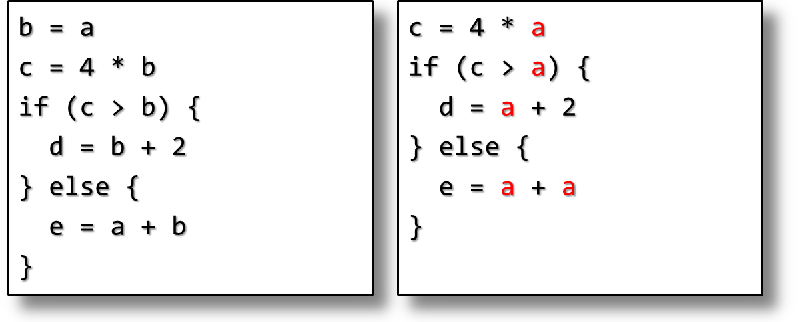
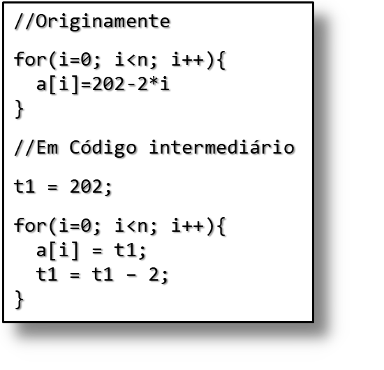
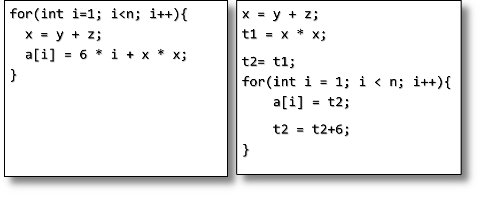
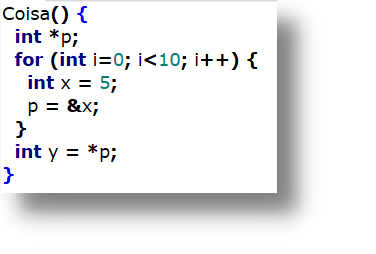
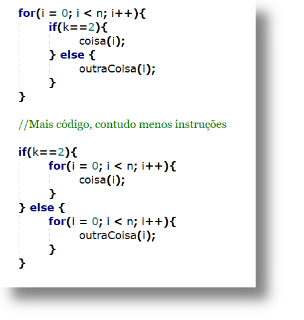

Frank Coelho de Alcantara -2020
Reduzir o custo computacional de rotinas repetidas (DAG).
Reduzir o número de variáveis utilizadas (registradores).
Utilizar melhor as características únicas de cada hardware.
Centenas, talvez milhares de otimizações diferentes (qual?).
Sempre que existir uma operação entre dois literais, execute esta operação.
Com esta otimização seu código pode ser mais claro.
Você pode usar $$tempo = 30 * MINUTOS\_POR\_DIA; $$
Em vez de: $$tempo = 43200;$$
Se sabemos que, em um determinado ponto do programa, uma variável tem um valor constante, substitua a referência a variável por este valor.
Não é uma otimização simples, precisamos conhecer o fluxo de dado e encontrar o valor da variável em todos os cenários possíveis.
Fica mais simples se o código estiver na forma de SSA
Depois de atribuirmos o valor de $A$ a $B$, a referencia de $A$ em $B$ pode ser substituída pelo valor de $A$, até que uma nova atribuição ocorra em $A$ ou $B$.
Não é uma otimização simples, precisamos conhecer o fluxo de dado e encontrar o valor da variável em todos os cenários possíveis.
Fica mais simples se o código estiver na forma de SSA
Método para estruturar o código intermediário de forma que cada variável seja atribuída apenas uma vez.
A ideia é remover possíveis redundâncias no uso de variáveis.
Precisamos encontrar todos os pontos onde uma variável é usada.
Outra estrutura de dados: Cadeias de definição de uso def. use chain.
Outro grafo relacionando cada definição de variável a todos os usos desta variável.
Computacionalmente muito caro: uma variável com $d$ definições e $u$ usos terá complexidade $O(d\times u)$.
Vamos simplificar este processo definindo cada variável apenas uma vez?
E assim nasceu o SSA dentro da IBM.
Quando voltamos de um $if$, por exemplo, como podemos saber que variável usar?
Infelizmente este é um problema insolúvel. Não há como determinar isso de forma autônoma.
Então, vamos usar uma função alternativa $a3 := \Phi (a1, a2)$ que indica que $a3$ pode receber $a1$ ou $a2$ dependendo do fluxo do programa.
E assim nasceu o SSA dentro da IBM..
Usamos as regras da álgebra.
Não otimizado: $((4*(a + b))/ (4*a))*c$.
Otimizado: $c + (b*c)/a$. A grande pergunta é: você vai deixar o interpretador fazer isso?
Divisão por zero? Overflow?
Verificação de overflow tem impacto direto na interpretação.
| GCC 9 | clang 9 | |
|---|---|---|
| no trapping | 0.17 ns/int | 0.11 ns/int |
| trapping | 2.1 ns/int | 0.32 ns/int |
| slowdown | 12 x | 3 x |
Fonte: Daniel Lemire (2020)
Algumas operações são mais computacionalmente mais caras em algumas arquiteturas e não em outras.
Infelizmente este é um problema insolúvel. Não há como determinar isso de forma autônoma.
A otimização mais comum é substituir multiplicações por somas.
$a = b/16 \Rightarrow a = b >> 4$
$a = b*64 \Rightarrow a = b << 6$
$a = b*15 \Rightarrow a = (b<<4) – b$
Dependem do processador e do número que está sendo operado.
Por outro lado, o processo de substituição é simples e direto.
Remover dos laços todo o código que não está sendo alterado dentro do código.
No exemplo há outra otimização: strength reduction.
Verificar e ajustar o uso de variáveis de acordo com seu tempo de vida, ou referências.
Em C++ isso não é fácil.
Economiza todo o custo de chamar a função e voltar.
Algumas linguagens possuem indicadores para provocar isso: inline in C++.
Economiza memória no stack, abre espaço para outras otimizações locais.
Precisa tomar cuidado com o excesso de uso.
Não é raro que o processo interno de um laço não seja relacionado ao laço.
Também não é raro que isso possa ser modificado se o laço for modificado..
Economiza memória no stack, abre espaço para outras otimizações locais.
Precisa tomar cuidado com o excesso de uso.
Na maior parte das linguagens imperativas o código é alocado estaticamente.
O compilador define, em tempo de compilação o endereço de cada artefato e este endereço é imutável durante o tempo de execução.
Variáveis estáticas dependem de seu tempo de vida:
Método simples e eficiente de alocar memória para sub-rotinas.
Quando uma sub-rotina é chamada toda a memória necessária é alocada em um bloco chamado de Activation Record ou Stack Frame.
O layout destes frames varia de linguagem para linguagem e de arquitetura para arquitetura
Manter uma linked-list do blocos livres no heap.
Para alocar, buscamos na lista um bloco cujo tamanho seja igual ou maior que o necessário.
Se o tamanho for igual removemos o bloco da lista de blocos livres.
Se o tamanho for maior, modificamos o tamanho para o tamanho necessário.
Quando um artefato é deletado, o bloco é devolvido a lista de blocos livres.
E verificamos se esse bloco não pode ser unido a um dos seus vizinhos para criar um bloco maior.
Quatro algoritmos dominam este cenário.
First-fit: seleciona o primeiro bloco da lista de blocos livres que seja maior ou igual ao necessário.
Best-fit: busca em toda a lista o melhor bloco para alocar o espaço necessário, o de tamanho igual é melhor.
Buddy system: usa blocos de tamanho padrão $2^𝑘$. Se não existir nenhum espaço disponível. Se nenhum bloco de tamanho entre $2^{(𝑘−1)+1}$ e $2^𝑘$ atende então vamos encontrar um bloco de $2^{(𝑘+1)}$ e dividi-lo ao meio adicionando as metades a lista de blocos livres
Fibonacci heap: blocos de tamanho padrão seguindo a sequência de Fibonacci.
Erros de desalocação manual estão entre os mais caros e difíceis de detectar em aplicações reais.
Se um objeto é desalocado muito cedo, a referência a este objeto provoca comportamento indeterminado.
Se um objeto nunca é desalocado teremos um vazamento de memória.
A técnica de recolher blocos esquecidos é chamada de Garbage Collection e foi inventada por John McCarty em 1959 para o Lisp.
Usada em Lisp, Scheme, Prolog, Ada, Java, Haskell.
A linguagem define o tempo de vida de um artefato.
Em tempo de execução mantém controle de todos o bindings de cada artefato, incrementando a lista sempre que uma referência é criada e decrementando sempre que a referência é destruída.
Se um objeto nunca é desalocado teremos um vazamento de memória.
É necessário determinar quando a variável está viva ou não, de acordo com a especificação da própria linguagem.
C++ não precisa, você pode fazer tudo que quiser com a memória e corrigir eventuais erros.
Nunca houve consenso sobre a necessidade ou não desta técnica.
Desde 03/2020 há um rebuliço na comunidade graças ao V8.
Porquê não?
Resource Acquisition Is Initialization: talvez o fator mais importante do C++ é garantir que um recurso deve adquirido no constructor e devolvido no destructor.
O segredo é que o destructor será automáticamente chamado se o objeto estiver fora do seu escopo.
Em Python, e em Java, você também dispõe de um destructor, mas não tem garantias de sua execução.
Ou seja, podemos ter problemas se o recurso for liberado antes da hora. Ou se não puder liberar por algum tipo de lock.
O segredo do C++ é amarar o tempo de vida de um recurso ao tempo de vida de uma variável local. O C++ já gerencia este tempo de vida.
O próprio Bjarne Stroustrup escreveu sobre isso Aqui.
O Rust usa uma técnica semelhante ao C++.
Usa um sistemas de tipos especial baseado em Affine Logic uma lógica que não permite contradição.
Usando este sistema de tipos, o compilador acompanha o tempo de vida do objeto que consome o recurso e libera quando necessário.
Aqui, também não há consenso.
Jesse Howarth da equipe do Discord escreveu um texto interessante sobre isso aqui.
Buffer Overflow: praticamente todos os Worms já liberados na internet usaram, ou usam, alguma forma de buffer overflow vulnerabilidade. O último exemplo ocorreu em 2017: WannaCry.
Buffer Overflow ocorre quando um dado é escrito em memória além do espaço alocado para um determinado artefato. Sobrescrevendo o espaço de memória adjacente.
Buffer UnderflowO corre quando dois artefatos do mesmo código tratam o mesmo bloco de memória já alocado, de forma diferente. Por exemplo, considere a alocação de um string de N bytes por um artefato. E que outro artefato escreva N-4 bytes nesta área. Durante a leitura esperamos ler N e teremos 4 bytes de lixo.
Impõe disciplina e restrições aos programadores.
Oferecem abstrações que limitam a liberdade e a flexibilidade de trabalhar diretamente com a máquina.
Com a esperança que a segurança extra valha a pena.
Há sempre um custo em eficiência no código.
Verificação em tempo de compilação: type checking.
Verificação em tempo de execução: array bounds checks.
Gerenciamento automático com Garbage Collection: não precisa do free().
Uso de um engine específico para execução do Código: JVM.
C, C++ e Objective-C são vulneráveis tanto a buffer overflow quanto ao buffer underflow.
As linguagens ditas seguras (Python, Ruby, C#) em algum momento irão utilizar uma biblioteca usada em uma destas linguagens.
leia aqui sobre o Python e a função socket.recvfrom_into() em 2014.
Sintaxe: use 4 espaços para indentar. Muito ruim para funções ou condicionais longas.
Importar: podemos importar uma função, praticamente criando um namespace, mas o código fica difícil de ler.
Aspas: duplas e simples são a mesma coisa. Para quebrar linhas use aspas triplas.
x=y atribui um novo nome ao valor que está em y, não copia. Não há uniformidade na forma de copiar um valor.
As versões são um pesadelo. E uma das razões para legalizar a eutanásia.
NAN é do tipo number.
1 é igual a "1". Para que isso não ocorra existe igualdade estrita "===". Sem typecast? Todos os valores true são convertidos para 1 e todos os falsos para 0. Mas se você converter é diferente.
let x = 0;
let y = "0";
console.log(Boolean(x) == Boolean(y)); // false
console.log(x == y); // true
null e undefined.
console.log(null === undefined); // false
console.log(null == undefined); // true
console.log(null > undefined); // false
console.log(null < undefined); // false
console.log(null >= undefined); // false
console.log(null <= undefined); // false
Você pode baixar o material de apoio clicando aqui
AHO, A. V. et al. Compiladores: princípios, técnicas e ferramentas. 2º. ed. Boston, MA, USA: Pearson Education Inc. , 2007.
Appel, Andrew W. Modern Compiler Implementation in Java, 2nd ed. Cambridge, 2002. (Editions in ML and C also available; the “tiger books”)
CASS, S. The 2016 Top Programming Languages. IEEE Spectrum, 2016. Disponível em:
Grune, Dick, Henri E. Bal, Ceriel J.H. Jacobs, and Koen G. Langendoen. Modern Compiler Design. Wiley, 2000
Hogg, Jim. CSE-P501 Compilers. Washington University, 2005
Barry Rosen; Mark N. Wegman; F. Kenneth Zadeck (1988). "Global value numbers and redundant computations" (PDF). Proceedings of the 15th ACM SIGPLAN-SIGACT Symposium on Principles of Programming Languages.